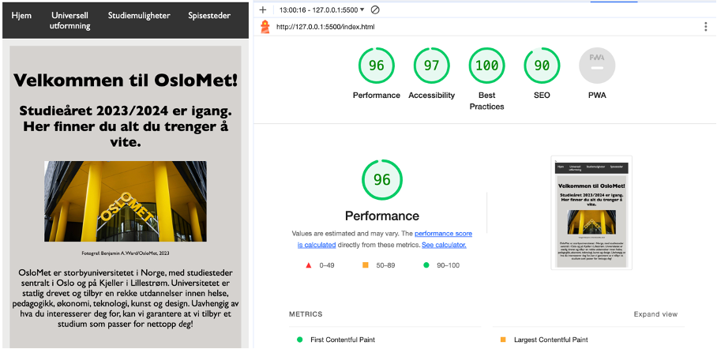
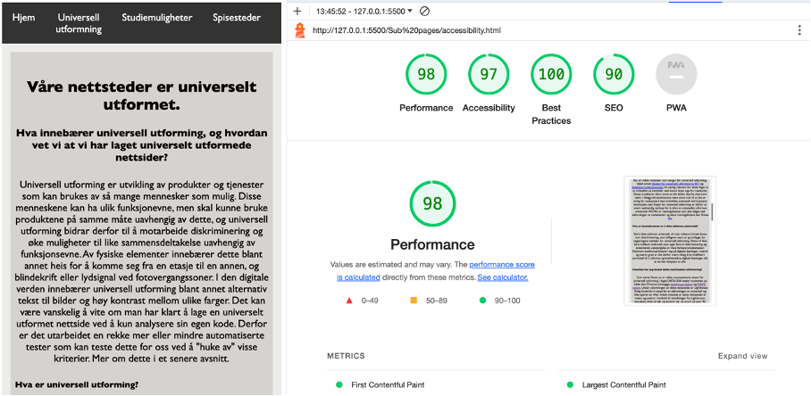
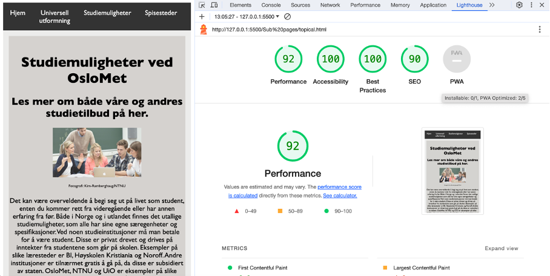
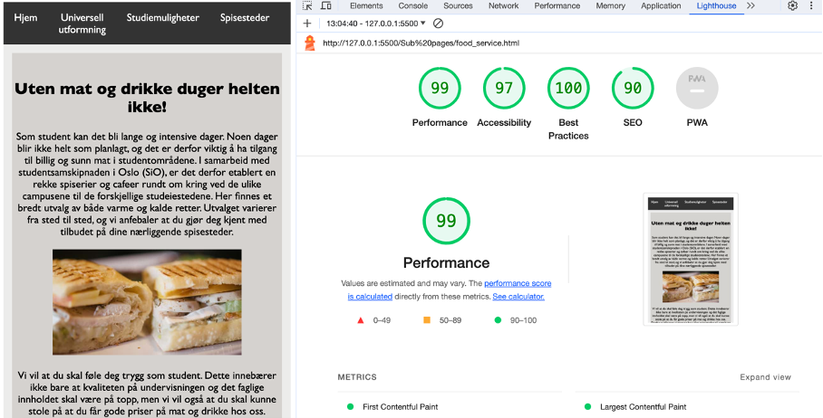

Våre nettsteder er universelt utformet.
Hva innebærer universell utforming, og hvordan vet vi at vi har laget universelt utformede nettsider?
Universell utforming er utvikling av produkter og tjenester som kan brukes av så mange mennesker som mulig. Disse menneskene kan ha ulik funksjonevne, men skal kunne bruke produktene på samme måte uavhengig av dette, og universell utforming bidrar derfor til å motarbeide diskriminering og øke muligheter til like sammensdeltakelse uavhengig av funksjonsevne. Av fysiske elementer innebærer dette blant annet heis for å komme seg fra en etasje til en annen, og blindekrift eller lydsignal ved fotovergangssoner. I den digitale verden innebærer universell utforming blant annet alternativ tekst til bilder og høy kontrast mellom ulike farger. Det kan være vanskelig å vite om man har klart å lage en universelt utformet nettside ved å kun analysere sin egen kode. Derfor er det utarbeidet en rekke mer eller mindre automatiserte tester som kan teste dette for oss ved å "huke av" visse kriterier. Mer om dette i et senere avsnitt.
Hva er universell utforming?
Som nevnt handler universell utforming om å designe, eller utforme, produkter slik at de kan benyttes uavhengig av funksjonsevne. Den universelle utformingen skal både gjelde fysiske og digitale produkter, og bidrar til alle samfunnets medlemmer skal kunne delta i samfunnet, og benytte seg av de mulighetene som finnes. I Norge har regjeringen utarbeidet en veileder for universell utforming (les mer om denne på regjeringen sine sider her). Denne slår fast at det er forbud mot diskriminering, og at dette derfor innebærer at tjenester, både fysiske og digitale, skal utformes på en universell måte. Vi har en rekke instanser som sørger for universell utforming, blant annet tilsynet for universell utforming av IKT og digitaliseringsdirektoratet. Av særlig relevans for dette faget er at innholdet på nettsider skal kunne leses opp for svaksynte. Dette innebærer blant annet at alle bilder skal ha alternativ tekst. I tillegg må kontrastene være store nok til at det er mulig for svaksynte å lese innholdet, eventuelt ved å justere kontrasten selv. Tester for universell utforming er derfor et svært nødvendig verktøy for å sikre at nettstedet utformes universelt. WCAG er retningslinjene som skla følges ved utformingen av nettseteder og disse retningslinjene kan finnes her.
Hva er konsekvenser av å ikke utforme universelt?
Ved å ikke utforme universelt vil man risikere å bryte loven mot diskriminering, som tidligere nevnt er grunnlaget for regjeringens veileder for universell utforming. Dette vil ikke bare indikere lovbrudd, men også føre til diskriminering og systematisk utestengelse av visse funksjonsnedsettelser. Ettersom samfunnet baserer seg på digitale løsninger i større og større grad er det derfor svært viktig å ha kvalifisert personell til å utforme og kvalitetssikre digitale løsninger, slik at de kan benyttes av alle.
Hvordan har jeg testet dette nettstedets utformning?
Som nevnt finnes et er rekke automatiserte tester for universell utforming. I faget DATA1200 møter studenten på både den Chrome-avhengige Lighthouse-testen og WAVE-testen. Under utformingen av dette nettstedet er Lighthouse flittig brukt for å sørge for at utformingen er universell og ikke sporer av. Hver enkelt nettside av dette nettstedet er testet og justert i henhold til anbefalinger fra Lighthouse-restulatet, frem til alle parametre har en score på over 90. Resultatet av testene finnes lenger ned på denne siden.
Hvilke hensyn bør tas i tillegg?
Selvom de automatiserte testene gir nyttig feedback og gode testresultater, er de til syvende og sist automatiserte tester som ikke tenker likt som faktiske mennesker. I mange tilfeller er det derfor aktuelt å gjøre justeringer til nettstedet utover det som fremkommer av testene. For det første har disse testene viarabel dekning. Noen av de vil kun kunne oppdage en fraksjon av potensielle feil, og det er derfor viktig å mauelt teste at funksjoner og linker på nettstedet fungerer. Noen tester vil også kunne gi falske positive, altså at de finnes en feil i koden, som ikke oppdages av testen og dermed passerer som godt utformet, uten egentlig å være det. Dette kan oppdages av andre test-verktøy eller ved å gjøre manuell testing. Språket som brukes i test- resultatet kan også være vanskelig å forstå, og i kodingen av dette nettstedet var det behov for en rekke videre utforsking av hva testene egentlig foreslo som endringer, og hvorfor den foreslo det. Det kan derfor være vanskelig å tolke testresultatet uten videre kunnskal om temaet. En kombinasjon av manuell testing og bruk av ulike automatiserte tester kan derfor gi en bedre dekning av test-kriterier og dermed større sjangse for korrekt universell utforming.
Under følger skjermbilder fra testene for universell utforming som er gjort for hver enkelt nettside på dette nettstedet:
Hjem-siden (index.html)
Accessibility-siden (accessibility.html)
Studiemuligheter-siden (topical.html)
Spisesteder-siden (food-service.html)
Kontakt-siden (contact.html)

Andre hensyn som er tatt:
I tillegg til punktene som fremkommer fra en accessibility-test er det tatt hensyn til en rekke andre punkter ved utforming av dette nettstedet. Eksempler på dette er:
- Problemer med åpning av nettstedet i andre nettlesere enn chrome - Safari krever mer meta-data for å integrere CSS.
- Noen linker var ikke klikkbare - de automatiserte testene viste ikke dette, og det var kritisk for nettstedets funksjonalitet at dette ble manuelt testet.
- Noen bilder ble ikke lastet inn, og alternativ tekst ble vist isteden - det viste seg at Safari hadde problemer med å laste inn bilder dersom de var for store. Testen viste ikke dette, og manuell test var nødvendig for å avsløre feilen.